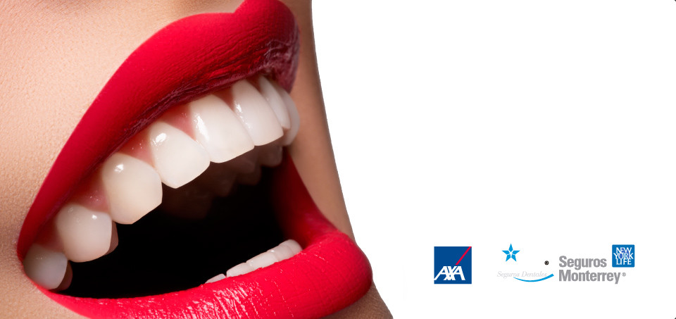
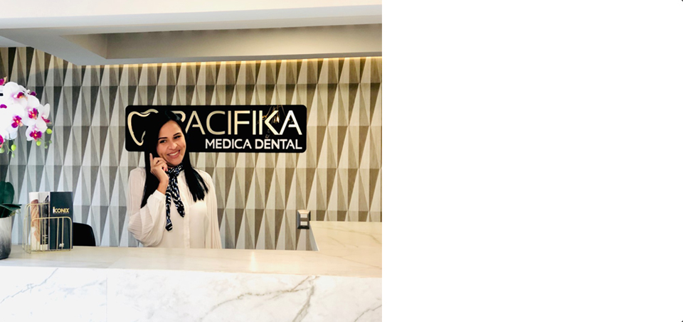
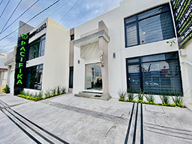

we are highly trained professionals with different certificates from different educational institutions.

we have thehighest technology
we have the most advanced equipment to provide you with the best service.

Contact usit willbe a pleasure to serve you
for that reason, we have different means to respond to each of your questions.
More Website Templates @ TemplateMonster.com - November 14, 2011!
QUALIFIED DOCTORS
We have the best qualified doctors, visit their Curriculum. Curriculum.
DIGITAL ANESTHESIA (PAINLESS)
It provides a less uncomfortable procedure by infiltrating the anesthetic in a computerized and very controlled way.
INTRAORAL CAMERA DIAGNOSIS
It shows us a more detailed picture of the oral cavity and also helps the patient to observe and understand more about their oral problems.
DIGITAL RADIOGRAPHY
It reveals a more accurate diagnosis due to its high resolution and contrast, it also captures and allows to analyze radiographs quickly and efficiently.
AT PACIFIKA DENTAL CLINIC

We are known for offering comprehensive dental treatments treated in harmony by specialists in each area of dentistry, all this to achieve the recovery of your health, function and high dental aesthetics.
We have modern facilities, the latest in technology, the best materials and highly trained specialized dentists to perform your smile design and any complex dental treatment.En At PACIFIKA CLINICA DENTAL we listen to the needs and desire of each patient based on this , we develop a personalized treatment plan to solve dental health problems and meet the specific desires of our patients. The first step to a makeover in addition to improving the health of your mouth is to request a first visit with the specialized dentist.
Once the situation is studied, we will give you some options and discuss them, focusing on the advantages/disadvantages of the different treatments, as well as the cost and estimated time to complete the treatment.
At PACIFIKA CLINICA DENTAL the dental treatment is predictable, years of experience endorse the work of our specialist dentists, and thanks to this many patients have placed their trust in us, obtaining exceptional results at reasonable prices.
Our experience, knowledge, technology and professionalism are the best guarantees of success and patient satisfaction in each treatment
At PACIFIKA CLINICA DENTAL we are specialists in high aesthetic and high quality dentistry treatments at very competitive prices accessible to all budgets. We also recommend our patients to visit us every 6 months to ensure their oral health and avoid problems of diseases such as caries or gingivitis.